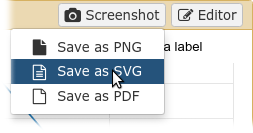
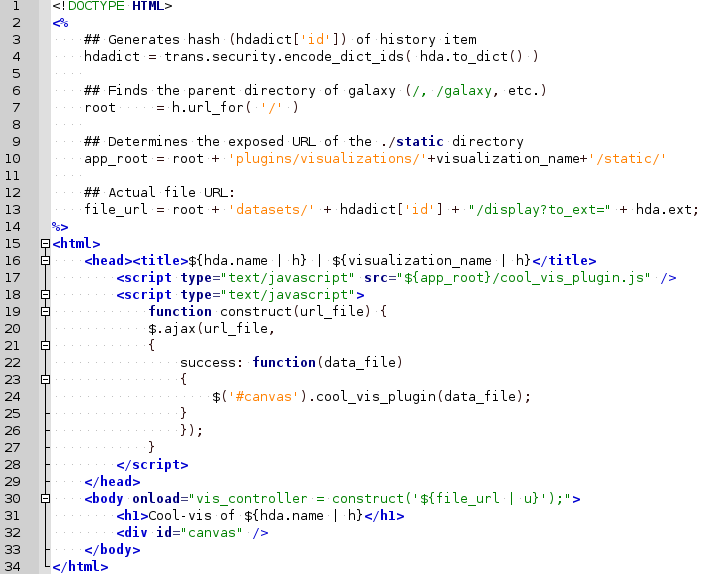

Generic plugins
Contributors
Authors: 
 Saskia Hiltemann
Saskia Hiltemann Youri Hoogstrate
Youri Hoogstrate
Questions
How can visualization plugins benefit science?
Objectives
Implement a first Galaxy visualization
Understand the client side vs. server side principle
Requirements
- Javascript knowledge
last_modification Published: Sep 30, 2016
last_modification Last Updated: Jul 26, 2021
Why visualizations?

X mean: 54.26, X SD: 16.76
Y mean: 47.83, Y SD: 26.93
Corr: -0.06
Speaker Notes Anscombes quartet, all these datasets have same mean, standard deviation and correlation, yet when visualizing them it is revealed they have vastly different structures.
Why visualizations?
Bam files - textual

Why visualizations?
Bam files - visualized

Types of visualizations in Galaxy
- Trackster - built-in genome browser
- Display applications
- UCSC Genome Browser
- IGV
- Galaxy tools
- JBrowse
- Krona
- Visualization plugins
- Charts
- Generic
- Interactive Environments
- Jupyter/Rstudio
- IOBIO (bam/vcf visualizations)
- Phinch (metagenomics visualizations)
Which should I use?

Plugins
- Visualizations button on history items
- Different options depending on file type

.enlarge120[
Plugins: Charts
]
.pull-left[
 ]
]
.pull-right[
 ]
]
Plugins: Charts
- Allows exporting screenshots

Plugins: Generic
- Elements of visualization plugin:
- Configuration (name, description, datatype)
- Template
- Static resources (js, css, images)
- Project Structure
- located in
$GALAXY_ROOT/config/plugins/$PLUGIN_NAME
- located in
myviz
├── config
│ └── myviz.xml
├── static
│ ├── css
│ ├── img
│ └── js
└── templates
└── myviz.mako
Plugins: XML file
$ touch $GALAXY_ROOT/config/plugins/$PLUGIN_NAME/config/$PLUGIN_NAME.xml
- Hooks visualizations into Galaxy
- Data types must match with class names in
$GALAXY_ROOT/lib/galaxy/datatypes/
Plugins: Mako file
- For templates of HTML files:
$ touch $GALAXY_ROOT/config/plugins/$PLUGIN_NAME/templates/$PLUGIN_NAME.mako - Link to data types and HTML template file
- Every invocation of visualization: template compiled
Plugins: Mako file
- Access to the history item (hda) pre template compilation:
$hda.file_name$hda.metadata.dbkey- Avoid (unnecessary) copies of whole files
- Access to hda post template compilation -> via URLs
- Download data file by browser (client side)
- Inconvenient for large files:
- Indices and query protocols (e.g. DAS protocol)
- Inconvenient for large files:
- Resolving history uid to hash
- Correction for extended root URLs:
- Download data file by browser (client side)

Plugins: Mako syntax
- Access to hda post template compilation:
- Obtain hash value used in urls hdadict[‘id’]
- Essential Python variables:
Plugins: Javascript and jQuery
- HTML / JS implementation make often use of jQuery
- Galaxy ships with jQuery
<script type="text/javascript" src="${root}/static/scripts/libs/jquery/jquery.js" />
Plugins: Generic template

Plugins: Static files
- External libraries and static files go in
./staticdir:

Plugins: Summary
- Galaxy visualization plugins:
- Datatype-specific
- Written in HTML5 / JS
- Require minor python / Galaxy ecosystem knowledge
- Have access to the whole Galaxy system
- pre-compilation: python
- post-compilation: JS / API
- Can be installed without additional configuration
- Can not be connected to workflows
- Can not (out of the box) save and share
Plugins: More tips and tricks
- Galaxy has UI guidelines with corresponding CSS (https://wiki.galaxyproject.org/VisualizationsRegistry/Cookbook)
- Look at existing plugins:
- Galaxy mainline
- https://github.com/bgruening/galaxytools/tree/master/visualisations
- API is now very extensive, everything is accessible with jQuery!
Key Points
- Visualizations require a different way of thinking: server and client side; downloading files rather than system level access
- Interactivity is what makes visualizations different from static tools
- Requires understanding of both the Galaxy ecosystem as well as HTML5/JS
- Performance is more important than for static Galaxy tools
Thank you!
This material is the result of a collaborative work. Thanks to the Galaxy Training Network and all the contributors! Tutorial Content is licensed under
Creative Commons Attribution 4.0 International License.
Tutorial Content is licensed under
Creative Commons Attribution 4.0 International License.